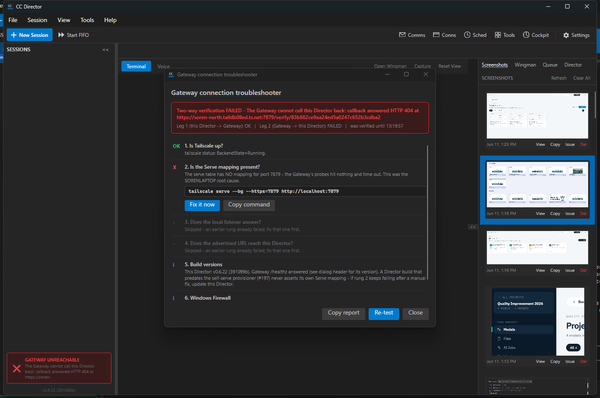

Role: Developer Agent (CenCon Development Method) |
Branch: issue-330-director-events-and-facts |
Date: 2026-06-11 |
Live rig: isolated slot-6 Director (own worktree build cc-director6.exe,
PID 45528, Control API 127.0.0.1:7879, ISOLATED CC_DIRECTOR_ROOT, launched via the
per-slot scheduled task cc-director6-launch) registered ONLY with an isolated
NEW-code test Gateway (GwProofHost, 127.0.0.1:7978) - the user's production fleet was never touched.
GET /facts - a true remote proof of the NEW surface is
structurally impossible until that machine updates to a build containing this change. Per the
established convention, the Gateway-leg equivalent was proven locally: a NEW-code Gateway pulled
GET /directors/{id}/facts through the registered proxy leg from the live slot-6
Director (a real HTTP hop over the registered control endpoint - the same code path a remote
Director exercises). An old Director answering 404 lands as null in
DirectorEndpointClient.GetFactsAsync and the proxy answers 502, so pre-#330 fleet
members degrade cleanly.
DoorbellRequest gains an OPTIONAL Event field
(src/CcDirector.Gateway.Contracts/DoorbellRequest.cs) with the
DoorbellEvents vocabulary: session-created,
session-exited, prompt-detected. Null/absent = the exact
pre-#330 wire shape - old Directors never send it, old Gateways ignore it
(compatible both directions). The channel stays fire-and-forget with heartbeat
reconciliation.ControlApiHost.WireDoorbellPush):
session-created on roster add (SessionManager.OnSessionCreated);
session-exited exactly ONCE per session (state -> Exited or roster removal,
whichever first, deduped by a concurrent announce guard that is dropped on removal so it
never outgrows the roster); prompt-detected on the detector's transition INTO
WaitingForInput/WaitingForPerm (the flagged assumption: the
existing detector signal, no prompt understanding).DirectorEventLog (src/CcDirector.Gateway/Events/) - a per-director
capped ring (200) plus one structured [DirectorEvents] log line per event,
served at GET /directors/{id}/events (404 for unknown directors).DirectorFactsDto /
ToolInventoryItemDto / LauncherFactDto in
CcDirector.Gateway.Contracts. New Director route GET /facts
(FactsEndpoint.cs) serving the cc-* tool inventory with versions
(CcDirector.Core/Tools/ToolInventory.cs: installed.json per-tool version, else
binary file-version resource, else the python-tools bundle version for pyenv console
scripts, else honestly null - NO process is ever launched) and the launcher presence/port
fact (CcDirector.Core/Configuration/LauncherDiscovery.cs: reads
%LOCALAPPDATA%/cc-director/config/launcher/launcher.json at request time,
never cached; absent = Installed=false, a valid fact, not an error).GET /directors/{id}/facts proxies to the
Director via DirectorEndpointClient.GetFactsAsync (pull-on-demand was chosen
over push-in-heartbeat: the inventory is large and changes rarely, so it must not bloat
the 15s hot path - justification carried in the PR).| # | Criterion | Expected | Actual (proof) | Verdict |
|---|---|---|---|---|
| 1 | session-created / session-exited observable at the Gateway within 5 s | Events land in the Gateway ring + structured log shortly after the moment | session-created received 99 ms after POST /sessions; session-exited
received once (count=1, dedupe proven across state->Exited and roster removal) -
ac1-ac2-event-lifecycle.txt,
structured log lines ac1-gateway-structured-log.txt |
PASS |
| 2 | prompt-detected on transition into a detected input-prompt state | Detector transition into WaitingForInput emits the event | prompt-detected received at 17:21:11Z after the session finished working
and the detector flipped to WaitingForInput -
ac1-ac2-event-lifecycle.txt |
PASS |
| 3 | Doorbell stays fire-and-forget; Gateway killed mid-stream does not wedge the Director | Director keeps creating/serving sessions while the Gateway is dead; failures logged and dropped | Test Gateway killed; session created WHILE dead (POST /sessions -> 200), Director fully responsive, doorbell failures logged "dropped; heartbeat reconciles" - ac3-gateway-kill-resilience.txt | PASS |
| 4 | Tool inventory (names + versions) retrievable through the Gateway | GET /directors/{id}/facts returns the inventory via the proxy leg | 32 tools with categories/versions/presence + launcher fact pulled through the NEW-code test Gateway from the live slot-6 Director - ac4-facts-via-gateway.txt (cross-machine caveat above: SORENLAPTOP is pre-#330, gateway-leg proven locally) | PASS |
| 5 | Launcher fact: absent = not installed; launcher.json fixture present = reports port | Absent file is a valid 200 fact; fixture with port 7900 reports it; read at request time | With fixture: installed=true port=7900; after deleting the fixture on the SAME running Director (no restart): installed=false - ac5-launcher-absent-vs-present.txt, full body ac5-facts-direct-launcher-present.txt | PASS |
| 6 | Contract changes called out explicitly in the PR description | DoorbellRequest.Event + DoorbellEvents + DirectorFactsDto family named in the PR | PR description carries a CONTRACT CHANGES section naming every DTO change | PASS |
Live slot-6 rig screenshot: live-slot6-director.png

ToolInventoryTests (6) +
LauncherDiscoveryTests (6) in CcDirector.Core.Tests;
DirectorEventsAndFactsTests (6) in CcDirector.Gateway.Tests - ring recording +
events route, legacy tag-less doorbell compatibility, 404s, GatewayClient event leg,
facts proxy end-to-end.Build succeeded. 0 Warning(s) 0 Error(s).DictationEndpointTests.FullPipeline_transcribes_phase0_clip2_with_realtime_provider
(live-OpenAI dictation test). NON-REGRESSION VERIFIED: the same test fails identically on
the base commit (main @ 43f1831) with zero #330 changes present - a known pre-existing
flake, not introduced by this change.docs/architecture/gateway/CONTRACT_AUDIT.md updated in the same change:
new row 94 GET /facts (Fact) as section 4.5 FactsEndpoint.cs; inventory
114 -> 115, Facts 50 -> 51; later sections/rows renumbered; section 5 documents the
shipped doorbell event vocabulary and the Gateway ring sink; changelog entry appended.GET /facts sits behind the same host auth
middleware as every Control API route; the Gateway routes require the same registry
knowledge as the existing proxy legs. No DT-* blocking rule touched.I believe this is finished.
{kind=link}